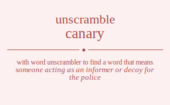

Do you wonder how many words you can made out of letters canary. To unscramble canary we can search against each letter in canary and find meaningful words in dictionary. You can use this word list to cheat word games. Unscramble word cheat is one of the things you can do by using our site.
The word found after unscrambling canary means that
someone acting as an informer or decoy for the police,
a female singer,
a moderate yellow with a greenish tinge,
any of several small Old World finches,
having the color of a canary; of a light to moderate yellow,
.
